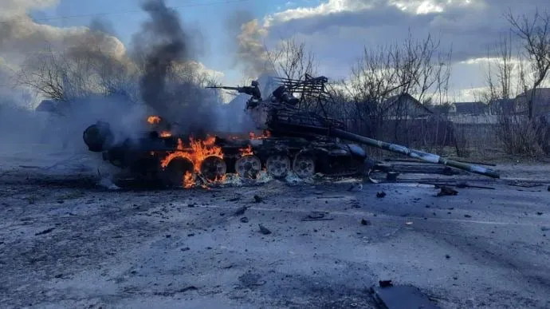
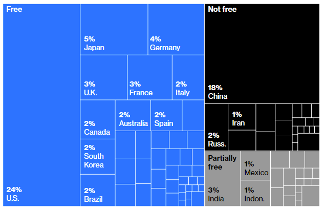

The international reaction to Russia's invasion of Ukraine is delivering China a message: its current approach to the world won't keep working much longer.
Does that title above seem odd? Surely it's Russia that's losing in Ukraine – in May of 2022, anyway. China hasn't been defeated; it's just an onlooker, right?
No. I suspect China is anything but an onlooker. China's political future is at stake on the plains of Ukraine.
Let me explain. Russia is a relatively small country these days, by most measures apart from raw land area, and Vladimir Putin has destroyed its remaining military significance in just a few weeks in February and March 2022.
But China is one of the world's two most significant nations. And even if Russia finds some way to recover and eke out a victory in Ukraine ... well, as far as I can see, China's autocrats have already lost there. Badly.
The reasons for that loss are much more to do with values than with military power.

A Russian tank, with its distinctive anti-missile cage, burns somewhere on the plains of Ukraine. Yes, it's a metaphor. Photo by the terrific Illia Ponomarenko (@IAPonomarenko on Twitter).The Chinese regime's problem is this. Russia's Ukraine invasion is nudging the world's democracies towards a new awareness that relationships with autocracies carry great risks. Liberal democracy matters.
And such an awareness is a poison-tipped umbrella for China’s autocrats.
Four points – predictions, maybe – in support of this idea:
I: A change in moral leadership
Outside the boundaries of Ukraine and Russia, the war's biggest effect of the war has been to reinvigorate the moral leadership of the US and Europe. NATO suddenly looks strong. Germany, France and Poland all look like leaders. More distant nations like Japan, South Korea and Taiwan (to which we'll return) all stand a little taller in their neighbourhoods. The Biden administration has quietly made the military-first George W. Bush approach look expensive, outdated and impotent. Meanwhile the Chinese leadership has seemed pretty much frozen in shock.
The line between democracies and autocracies has been lit up so brightly that all sorts of people will have to stop ignoring it. More people in Africa and Central Asia (and Brunswick and Paddington too) will be starting to think that liberal democracy might, after all, work best.
II: A new wariness about industrial supply
Until late February 2022, democracies had long avoided thinking about the repercussions of deep economic links with persistent, long-lived autocracies. But that has now changed. Europe is suddenly looking to cut its reliance on Russian gas, of course. But hydrocarbons aside, the autocracy that matters is China. The democracies are spending anew on industrial capacity that may blunt China's edge. Most notably, democracies are planning for semiconductor plants – and building them in places where they don't look vulnerable to invasion, which means outside China.
How far this goes is a big open question. Some experts doubt it will go very far at all, because China and the rest of the world are too enmeshed. But the Financial Times reports that "the US and Europe are ... planning tens of billions in support for chip manufacturing, in an attempt to reduce their reliance on Asian manufacturers." The process will take years.
As the FT points out, a shortage of capital equipment will delay this process; even to make more chip-making machinery, for instance, you first need to build more lens-making factories, and lord knows what supply-constrained equipment those factories in turn need. But analysts are already talking about a future chip supply glut caused by new non-Chinese supply.
The wariness about relying on Chinese components is probably affecting investments in less high-profile industries too. And that wariness will probably not quickly abate.
III: Taiwan slipping out of reach
The Russian failure in the Ukraine will be sapping Chinese enthusiasm for retaking Taiwan. Since the Sino-Vietnamese War ended in the late 1980s, China has been a relatively peaceful member of the international community (more so than Australia, really). But retaking Taiwan still appears to be the Chinese leadership's number one foreign policy ambition. And it's slipping away:
- Ukraine has just shown how a determined resistance can stop an invading force by destroying its logistics – and stretched supply lines would be an unavoidable feature of any Chinese assault on Taiwan. That has boosted Taiwanese belief in the value of resisting China.
- Taiwan has already officially adopted a “porcupine” strategy, relying first on guerilla strategies at sea and then on large numbers of hidden and mobile land-based weapons that can be used against invading ships and planes. Ukraine is showing how effective this can be. Right now, Taiwanese leaders are planning further expansion of the country's drone fleet, while looking at boosting their missile stockpile and training their people in the sorts of guerilla-style tactics the Ukrainians have been using.
- Meanwhile, a large group of democracies has shown that they are willing to support nations attacked by autocracies, at least while the costs to them are limited.
From Beijing, that little island across the Taiwan Strait suddenly looks far less reachable.
IV: Sanctions concern
China is a trading nation, to a far greater extent than the US, Australia, or the EU taken as a bloc. Chinese leaders will be calculating what sanctions could do to the Chinese economy, especially if the democracies fill the current holes in their non-Chinese supply chains.
The answers will not fill them with joy: severe sanctions were imposed on Russia in less than a fortnight and are proving at least somewhat damaging to the Russian economy. Notably, Russian banks have been turfed out of SWIFT, the main global payments system, and Russia’s central bank has been denied access to a large slice of the country's foreign reserves.
And while we often talk as if China manufactures everything these days, in fact Chinese industries like electronics and aviation are almost irretrievably globalised; they import components before exporting finished products. The Chinese must treat sanctions as a profound economic threat.
And from the leadership's Beijing offices, the likely club of prosperous Chinese allies in a future trade war looks worryingly small (see the diagram below). China is closing on the US economy in overall size – but the US has strong allies, while China has only weak ones. Nations like India, South Africa and Brazil have notably failed to rush to China's side. After Russia, its next biggest ally is probably Iran, whose economy produces just one per cent of world GDP.
Maybe it would be better to just concentrate on fixing internal problems for a while longer?
The rules-based order re-ascendant
If most of the above is true, that does not mean that China's integration with the global economy is going to be unpicked. It does not mean China's economy or government will be left a smoking wreck, like those Russian tanks.
Rather, it means that the China leadership will slowly begin to see more clearly that it has put itself into a particular type of cage – a very prosperous cage from the average Chinese citizen's point of view, but a cage that imposes more constraints than the Chinese leadership previously realised. Being part of the global economy means playing by the global rules, and those rules are becoming clearer, more explicit, and more expensive to break. The price of looking untrustworthy to your global neighbours is going up.
Note that this would apply to other countries too, perhaps most importantly the US. As Sam Roggeveen suggests in the comments below, in Afghanistan and Libya and the Second Iraq War, the US has gotten away with a great deal in the past two decades since 9/11. It's usually done it with Australia's help. And both countries have usually followed it with a lame defence of their motivations after everything goes arse-up. Now the US, too, will need to pay more lip service, and probably more actual attention, to international standards of behaviour. (Unless, of course, Donald Trump or some acolyte wins the 2024 US election, in which case anything could happen.) Australia will have to hold itself to a higher standard too.
But China is potentially pretty much alone as a major opponent of the liberal democracies. Russia is its largest potential autocratic ally, and Russia, though it loomed large in the 20th century, is now economically no bigger than Australia. China's second-biggest autocratic ally is Iran, populous and yet not exactly a power in the world. Individually, the nations arrayed against are a great deal more secure; collectively, they have a great deal more clout.
The democratic and the autocratic
Global GDP by nation and level of political rights and liberties

Source: Freedom House; IMF; Bloomberg
As a result of all this, I suggest, the pendulum may be swinging back towards a rules-based international order, of the type we were moving towards before 9/11. I do think that order is becoming more orderly over the decades, even if that is happening very slowly and with many setbacks. Its strength has surprised some in the democratic nations who had forgotten it. It has certainly surprised Putin. I think it may have surprised the Chinese leadership as well.
A values challenge
It may be that in a year's time, none of this matters, the Ukraine slaughter is over, and we are back to worrying about pandemic disease and other constants of peacetime life. But that seems by no means certain.
The Chinese leadership certainly seems worried that its values will be questioned in the wake of the Russian attack on Ukraine. And no wonder. China's regime looks a lot like Russia's. And the Chinese leadership has to worry not just about the outside world, but about China's own people.
I joked earlier about people in Brunswick starting to think liberal democracy is winning the values battle. But in fact the Chinese leadership seems worried about a related issue – people in Beijing starting to think that liberal democracy might be winning the values battle. An essay along these lines by prominent Chinese policy thinker Hu Wei appeared and then quickly disappeared from Chinese media in March. I recommend you read the whole thing at the link. When I read it, I found that Hu Wei had made a lot of the same points as this little essay, but earlier.
Writes Wei: "After the Russo-Ukrainian War, no matter how Russia achieves its political transformation, it will greatly weaken the anti-Western forces in the world ... China will not only be militarily encircled by the U.S., NATO, the QUAD, and AUKUS, but also be challenged by Western values and systems." (The emphasis is mine.)
From Beijing, these points probably seem worryingly clear.
Appendix: Views from professional analysts
Initially similar views from international relations experts seemed thin on the ground apart from Hu Wei's effort. In late April, they're more common:
- European studies expert Alexander Clarkson of King's College London agrees that the Ukraine War shows small states need not be pushovers for greater powers: "The current trajectory of the Russo-Ukrainian war should act as a wake-up call when it comes to these entrenched assumptions about the ability of great powers to militarily overwhelm smaller states." Tufts' Dan Drezner agrees.
- The Economist looks at how the war challenges the EU to take a less accommodating, economy-first view of China. Conclusion: "Mr Putin has shown Europe that it needs a new China policy."
- At Bloomberg, John Micklethwait and Adrian Wooldridge agree that the Ukraine War has sharpened the division between liberal democracies and autocracies, but worry that it will further shrink international trade, separate the world into two blocs and close down the global order:
"CEOs who used to build empires based on just-in-time production are now looking at just-in-case: adding inefficient production closer to home in case their foreign plants are cut off. The head of one of the world’s most powerful investment firms, with shares in almost every significant Western company, talked privately about 'a tsunami of recalculations' on the weekend after Putin invaded Ukraine. The CEO of one of America’s most iconic multinationals admits that he is reexamining production across China."
- Former Stratfor analyst Peter Zeihan also sees China as a big loser from the Ukraine war. Summary: China will lose flows of hydrocarbons; it will lose important access to the globalised liberal democracies; and its leadership now knows that a sanctions regime could cut its flows of hydrocarbons and food, vital commodities that it imports in huge quantities.
https://www.youtube.com/watch?v=3z6IWyaO168
- At Hedgehog Review, University of Virginia political scientist John M. Owen reckons: "The war has exposed Russia as a conventional also-ran bristling with 4,500 nuclear warheads, but not a great power."
Update: I've tweaked various bits of this since first posting it.
Update 2: Thanks to Lowy's Sam Roggeveen for pushing me to clarify both my thinking and my expression. A new section now looks at the rules-based international order.
It's also got a pointy end for Xi Jinping personally. Longlasting and successful authoritarian regimes practice regular leadership transition. Examples are Mexico 1920—2000, Singapore 1959—present, and China 1989—2013. Putin has been president or prime minister since 2000. Xi needs the party congress to extend his term in November and his arguments are weaker now than they were before the Ukraine war. The prospect of a military action against Taiwan have now receded into he distant future.
A few things to agree with but 4 is the all important. China would lose enormously from retreating from the world trading system. Their standard of living would drop like a stone. Could the Communist party survive that? As Noah Smith has pointed out Xi is not the smartest bloke around but autocrats like to stay in power. Putin surrounded himself with yes men and now is in deep doodah
Your main claim is that "Russia’s Ukraine invasion is nudging the world’s democracies towards a new awareness that relationships with autocracies carries great risks." Eventually we will find out if you are right. But globalisation is pretty stubborn and hard to unpick, as Covid has demonstrated. My bet would be on China's continued integration with the global economy, rather than decoupling. I'm not sure there is much to be gained by lumping autocracies together. Democracies (one in particular) have been rather warlike in recent decades too. I agree the invasion of Ukraine is bad for China's Taiwan ambitions, both because it makes the military mission look harder and because it makes the prospect of sanctions look scarier. But overall, I'm not persuaded this is such a bad moment for China. In PR terms, the fact that the invasion happened right after Putin's Olympics visit and the joint declaration was dreadful, but these things pass (nor should we mistake Western opinion for world opinion). Over the medium term, China may well benefit from a weaker Russia that is more reliant on its economic relationship with Beijing.
Thanks Sam. You note that "globalisation is pretty stubborn and hard to unpick". I realised when I read this that I had left my view here unclear. I don't think the world will separate into blocs, and I have now added some material setting this out ("The rules-based order re-ascendant").
I think Ukraine and Taiwan are not as comparable as people seem to think. Sure, China might want Taiwan. Not that I know much about military stuff, but I also don't see why they couldn't take it in a few days if they were willing to destroy it in the same way Russia is obliterating Ukrainian cities now. The size of their military is huge and, unlike Russia, far more cutting-edge ($220 billion a year buys you a lot in China). They also don't need to worry about a few deaths (unlike democratic countries). But that's the difference -- a lot of what is valuable in the Ukraine is the land and from a Russian nationalist perspective, oppressed Russians. The main valuable things in Taiwan are high tech companies and a well educated population with a productive and functional society who have historically invested a lot in mainland China (to China's great benefit). So if you destroy Taiwan, you destroy what is valuable, and that includes a constant stream of investment that helps China. After that, there isn't much left, and hopefully even loonies like Xi Jingping realise that.
I lived in Hong Kong, China from 1995 to 1999: a very fraught time. My departure from the university was largely driven by ethnic revenge for the fact of the British colony. I had by best ever research window and my contract at lecturer level was not renewed. I got a reader position at UNSW and chair 4 years later. The useless old pommy colonials who toed the line kept their overpaid positions. My four years there made it clear to me that even in that most pro-western Chinese enclave, a tiny privileged peninsula that had been saved the cultural revolution, the resentment of western success was palpable. There was no way to rationally discuss the handover with locals. It was the inevitable reunification of the "motherland", a term I had not heard before. It is only slightly more benign than the "fatherland". When I returned to Australia, I told everybody I knew for the last 20 years that the Chinese nation would never be a partner with the West. This below up some dinner parties. But fuck it. I knew I was right because I had lived there and talked toi them. The CHinese have “cherished their resentments” for these many decades. They still talk of the century of humiliation – self-imposed I would say. There was never a chance that they would partner with other nations as equals. It has not happened in 1000 years and will probably never happen now that their leaders have abandoned human development and chosen the easy path of nationalism. Here is a challenge to any Troppodillian. If you have a Chinese Australian friend or colleague ask them “Why the hell don’t China just let Taiwan go? They want to be democratic. The majority no longer consider themselves Chinese. What is the justification for forced unification?” Get ready to lose a friendship.
Thanks Chris. Just to be clear, I'm not predicting the Chinese will just shrug their shoulders and pivot to building genuine partnerships with the democratic nations. They won't give up on Taiwan, either. Really, I'm not predicting much about China at all. I don't have any real insight into how China will react to this changing reality (although I'm planning to catch up with Rowan Callick soon, and will pump him for ideas). I'm interested in whether you think the Chinese will perceive that they have to make a course correction, and what you think about how they might do it.
I also find it hard to predict what China will do but giving up on Taiwan is not possible for them psychologically. They may back off with their wolf-warrior stuff but we just heard of their deal with the Solomons two weeks ago, in the middle of the Ukraine fiasco! So no signs as yet.They probably consider Ukraine a useful distraction, just like Covid was a useful distraction to complete their full subjugation of HK.
The opium wars, probably capitalism's least glorious episode, were centred on Hong Kong.